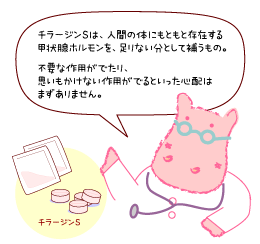

|
Lesson7 : 先天性甲状腺機能低下症（クレチン症）の薬
7-1 クレチン症の薬 チラージンS
| サイロキシン（Ｔ４） | トリヨードサイロニン（Ｔ３） | |
|---|---|---|
| 薬の名前 | チラーヂンＳ | チロナミン |
| 飲み方 | １日１回 | １日３回 |
| 消化管からの吸収率 | 約４０−７０％ | 約９０％ |
| 半減期 | 約７日 | 約１日 |
30年ほど前までは、先天性甲状腺機能低下症（クレチン症）の治療に乾燥甲状腺末（商品名：チラーヂン）が使われていました。乾燥甲状腺末は、動物（ブタ）の甲状腺を原料とする天然の甲状腺ホルモン薬ですが、T3とT4の両方が含まれていることや、また生物製剤のため成分が一定せず、甲状腺ホルモン濃度が安定しないことなどから、今は使いません。レボチロキシンナトリウム（チラーヂンＳ）とは違う薬です。
チラーヂンＳの半減期（体内で、薬の成分が服用時から半分に減るまでの期間）が約7日ということから、大人で1日1回7日分を、1週間に1回（つまり7回分の薬）飲む研究がされました。その結果、特に副作用もなく治療できたそうです。むしろ、1週に7回分を1回で飲むのでは、少し量が足りなかったとのデータが出ています。
つまり、チラーヂンＳは、1日の必要量の7倍量を、1週間の内にきちんと飲みさえすれば、大きな問題は起きないと言うことです。ですから、副作用を心配して1日3回に分割するより、1日1回きちんと飲まし、すぐ嘔吐するようなら、同じ量をもう一度飲ましても、まず副作用は起きないと言うことです。
チラーヂンＳは、原則として1日1回服用する薬です。
服用の時間は大人では早朝空腹時が勧められていますが、以下の論文に示された研究では夜服用した方が、腸管からの吸収が安定し甲状腺機能検査も良好な結果を示しました。子どもでの検討はまだされていませんので、子どもでも同じ結果となるかはまだわかりません。
Bolk N, Visser TJ, Kalsbeek A, van Domburg RT, Berghout A.：Effects of evening vs morning thyroxine ingestion on serum thyroid hormone profiles in hypothyroid patients. Clin Endocrinol (Oxf). 2007 Jan;66(1):43-8.
7-2 薬の副作用
風邪の時に使う症状を和らげるためのいゆる「かぜぐすり」（綜合感冒薬）や細菌感染症の薬である抗菌薬（抗生物質）といった、本来、人間の体になかったものが体内に入った場合、それらの薬は人の体に対してなんらかの作用を示します。それが治療目的にあっていれば、薬として効果があったわけですし、体にとって有害であれば「副反応」（Adverse
effect、最近では「有害事象」といったりします）と言われます。
副反応にも２種類あって、アレルギー反応といった薬自体の作用とは無関係な思いもかけないものと、薬の作用が強くでたり、予想していなかった作用が生じたりする、薬自体の作用に基づくものとがあります。
これに対し、チラーヂンＳは、人間の体にもともと存在する甲状腺ホルモンを、足りない分として補うものですから、理論的には「副反応」はほとんど起こらないと考えられます。もちろん少なすぎれば、作用不足ですし、多すぎれば薬としての作用が過剰に起きます（＝甲状腺機能亢進症の症状）ので、そうした状態にしないための注意は必要です。しかし、一般の薬のような、不要な作用がでたり、思いもかけない作用がでるといった心配はまずありません。
しかし、ごくまれに、チラーヂンＳそのものに対する、アレルギー反応（薬疹や肝機能障害といったもの）が報告されています。しかし、これはクレチン症とは違った、後天的な甲状腺の病気に使った時に起こったとして報告されているのがほとんどですし、成分であるレボチロキシンに対するアレルギー反応ではなく、それ以外で錠剤に含まれている成分（部分アルファー化デンプン，トウモロコシデンプン、D‐マンニトール，その他3 成分）に対するアレルギー反応とも言われています。 バセドウ病という、クレチン症とは逆の、甲状腺機能亢進症に使われる「抗甲状腺剤」という薬には、副作用として白血球減少があり、これは代表的な副反応です。しかし、クレチン症の場合、「副反応で白血球が減る」ということはまず考えなくて良いでしょう。 |
 |